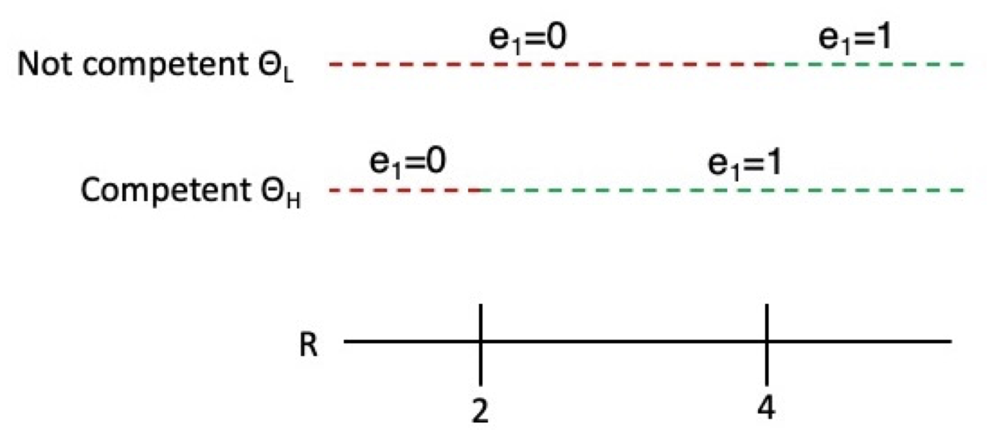

This chapter introduces how elections can be useful tools in democracies for governance. We first look at a model of how elections can help voters select good candidates to govern. Then, we look at how elections can help decide tax policy and public goods. Finally, we look at how elections can be tools to aggregate information across all voters to achieve better outcomes.
Elections as Selection Devices
A Model of Political Agency
We have 3 players: a voter, and 2 politicians (an incumbent I and a challenger C ). Our model will take place over two time periods, t \in \{1, 2\}.
Each time period t will have a bad policy outcome, or a good policy outcome: w_t \in \{0, 1\}. The probability of a good outcome depends both on the effort and competence of the elected politician in office during that time period.
Politicians j \in (I, C) each can have high competence, or low competence: \theta \in \{ \theta_H, \theta_L \}. The prior probability of any politician being competent is p \in (0, 1). Only the politician themselves know their own competence.
Politicians, if in office, can exert effort into making better policies. The sitting politician in period t can exert no effort, or a lot of effort: e_t \in \{0, 1 \}.
However, politicians in choosing to exert effort, will have some costs. The costs c are some function of effort e_t and type \theta: c(e_t, \theta).
\begin{split} & \underbrace{(0, \theta_H) = c(0, \theta_L) = 0}_{\text{cost of no effort is always }0} \\ & \underbrace{c(1, \theta_H) = 1}_{\text{cost of effort for } \theta_H} \ < \ \underbrace{c(1, \theta_L) = 2}_{\text{cost of effort for } \theta_L} \end{split}
This is because more competent politicians will need less energy to achieve the same effort as low competence politicians, because of their competence.
The payoffs of politicians are given as a function of both R, the utility they gain from being in office (given they win the election), and subtracting the costs of putting in effort c(e_t, \theta):
u_j(e_1, e_2, \theta) = \gamma_{1j} (R - c(e_1, \theta)) + \gamma_{2j} (R - c(e_2, \theta))
Where \gamma_{tj} indicates if in time period t, the politician j \in \{I, C \} (either incumbent or challenger) is in office. When \gamma_{tj} = 1, the politician is in office, and when \gamma_{tj} = 0, the politician is not in office.
However, voters do not observe effort and competence. They only observe the outcome w_t is good or bad. The probability \pi of a good outcome w_t = 1 is:
\pi = Pr(w_t = 1) = \begin{bmatrix} & e_t = 0 & e_t = 1 \\ \theta_L & 0 & 0.5 \\ \theta_H & 0.5 & 1 \end{bmatrix}
Or in other words, if a low-competence politician puts no effort, there is 0% chance of a good outcome. If a low-competence politician puts in effort, there is a 50% chance of a good outcome. If a high-competence politician puts in no effort, there is a 50% chance of a good outcome. If a high-competence politician puts in effort, there is a 100% chance of a good outcome.
Outcome is not a perfect indication of the politician’s actions or type, but a good outcome is indicative of either higher effort or high competence.
Voter’s utility is dependent on the policy outcomes - they want the best policy outcomes for themselves:
u_i = w_1 + w_2
The timing of the game is as follows:
- Nature draws the type of the incumbent politician and the challenger politician \theta = \theta_H, \theta_L, at probability Pr(\theta = \theta_H) = p for each politician.
- Incumbent politician (already in office during t=1) decides how much effort to exert in period 1 e_1 \in \{0, 1\}.
- Period 1 outcome w_1 is realised.
- Voter either re-elects the incumbent, or elects the challenger based off of w_1.
- The elected politician (either incumbent if re-elected, or challenger) then decides how much effort to exert in period 2 e_2 \in \{0, 1\}.
- Period 2 outcome w_2 is realised.
Voter’s Incentives
Since this is a dynamic game, we should start from the end of the game, time period t=2. Based on the model, there is no election after period 2 (the world essentially ends).
We know that politicians exert some cost c(e_t, \theta) when exerting effort. However, when there is no election after t=2, there is no incentive to exert any cost. Thus, the only rational strategy for any politician j is to exert effort e_2 = 0.
What happens when effort e_2 = 0 is realised? If the politician in the 2nd round is type \theta_H, then there is a 50% chance of a good outcome, which gives the voter an expected utility of w_2 = \frac{1}{2} (1). When the politician in the 2nd round is type \theta_H, then there is a 50% chance of a bad outcome, which gives the voter an expected utility of w_2 = 0.
From this, we can see that the voter gets a higher expected utility in t=2 if the politician who occupies office in t=2 is type \theta_H. Thus, the goal of the voter now becomes to elect a \theta_H politician in the election before t=2.
Voters thus have 4 possible strategies to pursue:
- Re-elect only when outcome in period 1 is good: w_1 = 1.
- Re-elect only when outcome in period 1 is bad: w_0 = 0.
- Never re-elect no matter the outcome in period 1.
- Always re-elect no matter the outcome in period 1.
Strategies 3 and 4 is never rational, and I will not provide the full proof here. The simple reason is that if you always re-elect or never re-elect regardless of outcome, then neither candidate has any incentive to put any effort, since they know they will 100% be re-elected or not-elected.
Strategy 2 can be rational in certain circumstances (which is counterintuitive), but again, this is not particularly useful for the purposes of this model.
For the rest of the time, we will focus on strategy 1: voter only re-elects the incumbent if they see a good outcome w_1 = 1 in t=1.
Incumbent’s Decision
We are assuming that the voter only re-elects the incumbent if they see a good outcome w_1 = 1 in t=1. This implies that the probability of re-election for the incumbent I is equal to the probability of a good outcome w_1 = 1 in the first period t = 1.
We know that a politician’s utility is given by the following utility function:
u_j(e_1, e_2, \theta) = \gamma_{1j} (R - c(e_1, \theta)) + \gamma_{2j} (R - c(e_2, \theta))
Let us look at the incumbent’s j = C decisions in t=1. Should the exert effort or not? Let us test all four combinations of competence type \theta and effort level e_1.
If the incumbent is \theta_L, and he exerts no effort e_1=0, what happens? The incumbent will not have any cost c( 0, \theta_L) =0, since they are exerting no effort. But they will have 0% probability of producing a good outcome w_1 = 0, so they will never be re-elected. Thus, we know that \gamma_{2j} = 0, since they will never be in office in the second period. Thus, their utility is:
u_I(0,0, \theta_L) = 1 (R - 0) + 0 (R - c(e_2, \theta)) = R
If the incumbent is type \theta_L, but he exerts effort, he has a cost c(1, \theta_L) = 1, but also has a 50% chance of being re-elected to the second round (where no politician puts any effort, as seen above). Thus, his utility is:
u_I(1,0, \theta_L) = 1(R - 2) + \frac{1}{2}(R - 0) = R - 2 + \frac{1}{2}R
So, when should incumbent type \theta_L use effort e_1 = 1? Only when the payoff of e_1 = 1 is higher. Thus, we have the following inequality, and we can find the condition of R that makes it so type \theta_L wants to exert effort in t=1:
\begin{split} & u_I(1, 0, \theta_L) > u_I(0, 0, \theta_L) \\ & R - 2 + \frac{1}{2}R > R \\ & R > 4 \end{split}
Thus, incumbent with type \theta_L only wants to put in effort e_1 = 1 in t=1 if R>4.
Now let us do the same for \theta_H. If he puts in no effort e_1 = 0, he has a 50% chance of getting a good outcome w_1 = 1, and thus, a 50% of winning reelection. The utility is thus:
u_I(0, 0, \theta_H) = 1(R-0) + \frac{1}{2}(R-0) = \frac{3}{2}R
If type \theta_H puts in effort e_1 = 1, he has a 100% chance of getting a good outcome w_1 = 1, and a 100% chance of winning reelection. Thus, the utility is:
u_I(1, 0, \theta_H) = 1(R - 1) + 1(R-0) = 2R - 1
So, when should incumbent type \theta_H use effort e_1 = 1? Only when the payoff of e_1 = 1 is higher. Thus, we have the following inequality, and we can find the condition of R that makes it so type \theta_H wants to exert effort in t=1:
\begin{split} & u_I(1, 0, \theta_H) ≥ u_I(0, 0, \theta_H) \\ & 2R - 1 > \frac{3}{2}R \\ & R >2 \end{split}
Thus, incumbent with type \theta_H only wants to put in effort e_1 = 1 in t=1 if R>2.
We can create a graph of when the incumbents want to exert effort e_1 = 1 given the value of R:

We can see there are three different scenarios:
- When R<2, both types have no incentive to put any effort.
- When R \in (2, 4), only competent type \theta_H have an incentive to put in effort.
- When R > 4, both types have incentives to put in effort.